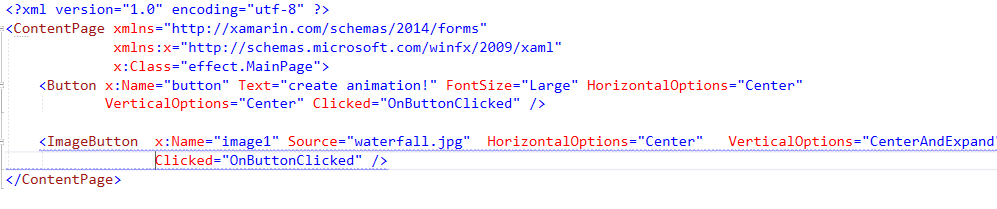
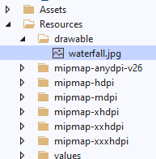
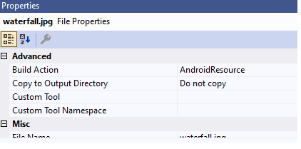
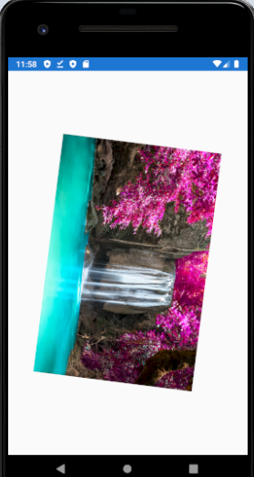
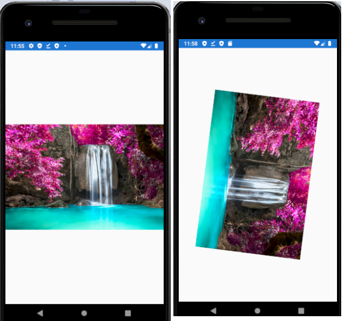

In this article, we see how to create moving objects in Xamarin Android. To this end, a Xamarin Form design is utilized in Visual Studio 2019. 1. In Visual Studio, create a blank Xamarin Form application, 2. The MainPage.xaml is enough to create moving objects./br> In .xaml page should include three items including button, image, and imagebutton. Your .xaml page should seem to be as follows:
Note that we added image to see it cannot move as imagebutton does.
Following functions enable animation to start and stop whenever we want. async void OnButtonClicked(object sender, EventArgs args) { button.Rotation = 0; button.RotateTo(360, 2000); await button.ScaleTo(5, 1000); // image1.Rotation = 0; image1.RotateTo(360, 2000); await image1.ScaleTo(5, 1000); image1.RotateTo(180); }
The function we defined above can be executed in differeny ways depending on your design constraints.
####################################### You should add an image to drawable folder as below: ##############################################  Change the BuildAction property of image as AndroidSource:  If you click the imagebutton your moving objects seem like below:  